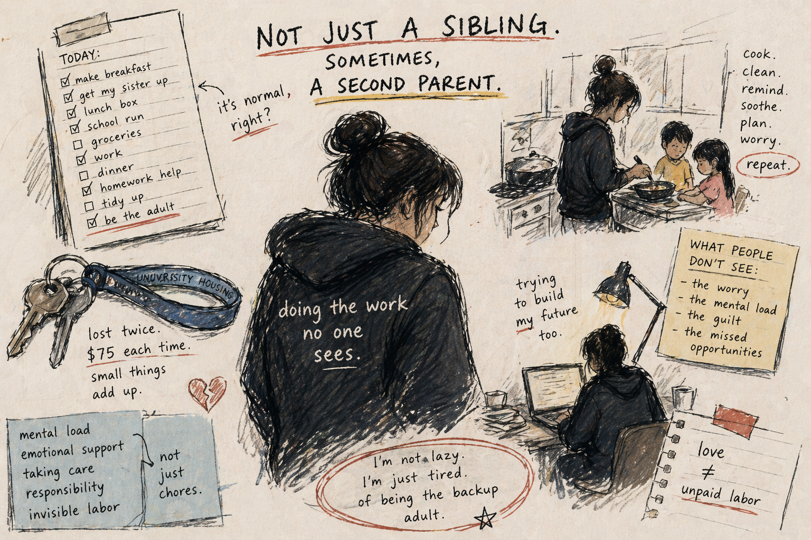

When does helping become parentification?
This site maps public discourse, research findings, and interview insights.
Main idea: separate instrumental vs emotional responsibilities, track timing, and measure support/fairness.

Key terms
- Instrumental: practical tasks (supervision, logistics, chores).
- Emotional: mediator/comforter roles, managing others’ feelings.
- Support: adult backup, boundaries, recognition.
Public conversation
A lot of people don’t talk about “older sibling responsibility” in research words. They talk about it as a feeling. The phrase eldest daughter syndrome got popular because it names resentment, guilt, and the pressure to manage other people’s emotions (Valenzuela, 2022). The strength of Valenzuela’s piece is that it catches how people describe the burden in everyday language—being the “unpaid counselor,” having to keep everyone calm, and feeling like one mistake cancels out years of effort.
But public writing also has a limit: it usually does not define the line between ordinary sibling help and role reversal. “Syndrome” can sound clinical even though it is mostly a cultural label. That’s why I like Sloat’s framing in The Atlantic—it treats the burden as a structural pattern, shaped by gender expectations and role assignment in families, not as an individual flaw (Sloat, 2023). That framing makes the debate less about blaming specific parents and more about asking: why does this role fall on certain kids, and what conditions make it heavier?
Takeaway: public discourse is strong at naming the emotional reality, but it doesn’t give consistent measurement or boundaries. It’s useful for visibility and hypotheses, not final answers.
Research findings
In research, the closest concept is parentification: when a child takes on adult-like roles. Dariotis and colleagues separate it into instrumental parentification (adult practical duties) and emotional parentification (being a mediator, confidant, emotional supporter) (Dariotis et al., 2023). Their systematic review shows a pattern: outcomes are more negative when responsibilities start early, last long, and happen without enough support. But they also stress it’s not only negative—some youth show resilience or even growth when responsibilities feel fair, recognized, and supported (Dariotis et al., 2023).
East and Hamill (2013) fits that “it depends” story. Their study of sibling caretaking shows mixed associations: caretaking can connect to strengths in some contexts and costs in others, like school absences. The key is not just whether caretaking exists, but what it means inside that family and what expectations are attached to it. Granovetter et al. (2023) adds a “magnified” case by looking at families managing a serious medical condition. That context makes certain duties more visible—monitoring, checking, emotional/social support—so caregiving is not only chores. At the same time, their data is parent-reported, which is a reminder: whose perspective you collect will shape what you think caregiving is.
Takeaway: research agrees less on one outcome and more on one theme—conditions matter. Task type, timing/intensity, and support/fairness keep showing up as the variables that change the story.
Interviews
Project 6: Professor interview (Q&A)
This interview helped me tighten the boundary: the line is not “doing chores,” it’s when responsibility becomes age-inappropriate adult responsibility, especially when emotional labor is expected without enough adult backup.
Open Q&A PDFProject 5: Sister vlog
A lived-experience view from the “receiver” side: what felt supportive, what felt like too much, and how fairness/support showed up in daily life.
Methods gap
After reading the sources and doing interviews, the biggest gap is not “people disagree.” The gap is that the same word—responsibility—often covers different tasks, different timing, and different support contexts. That makes findings hard to compare.
- Task-specific measurement (instrumental vs emotional; include monitoring/mediation).
- Timing/intensity (start age, duration, frequency).
- Support/fairness cues (boundaries, adult backup, recognition).
- Perspective (center siblings’ voices, not only parent report).